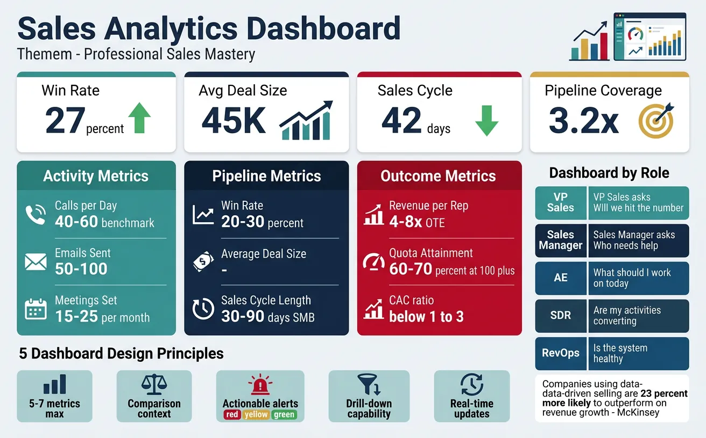
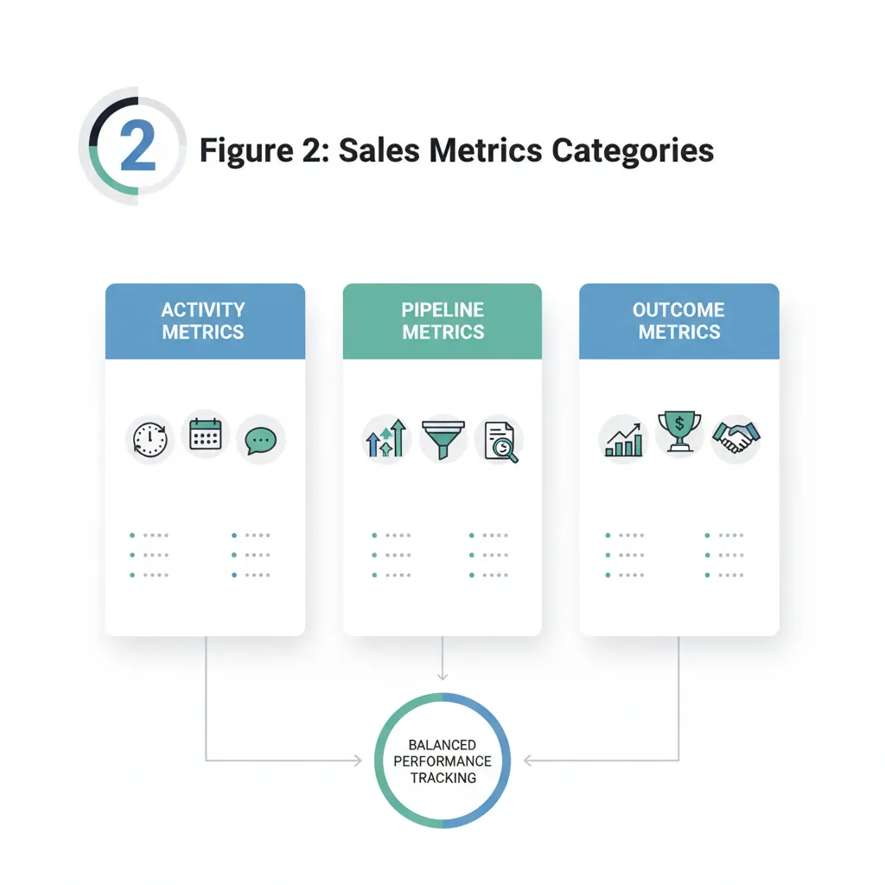
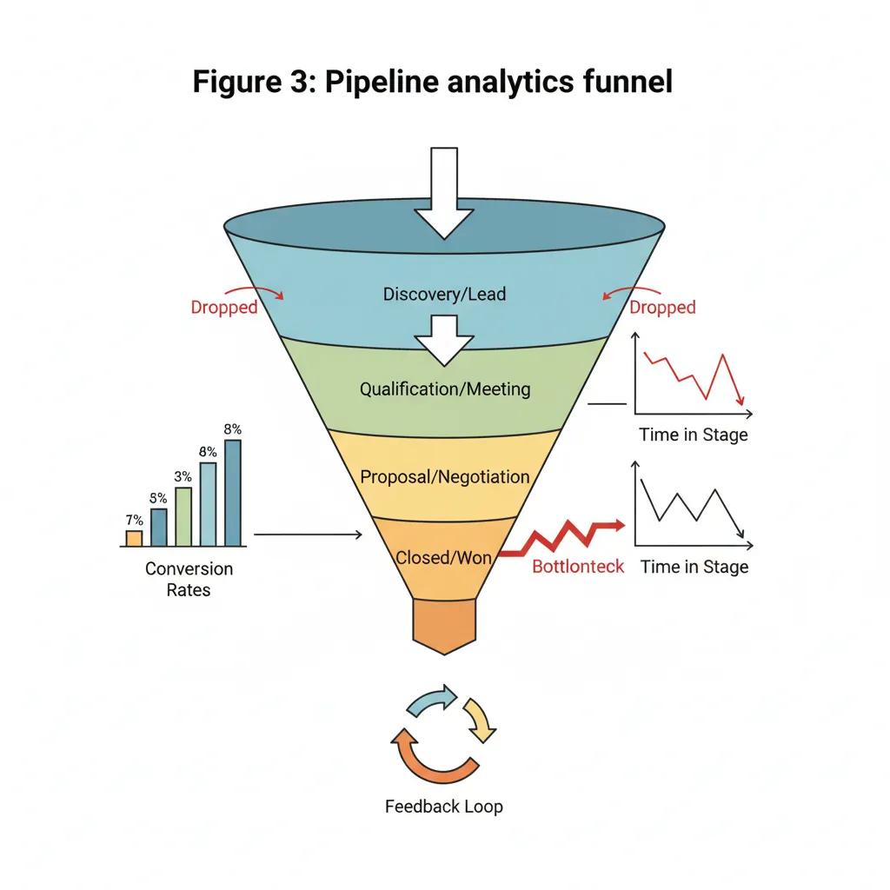
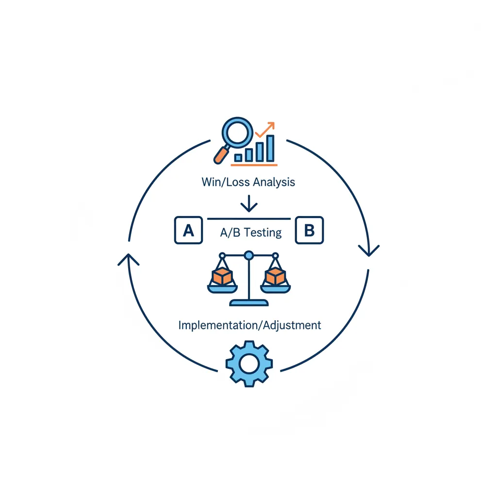
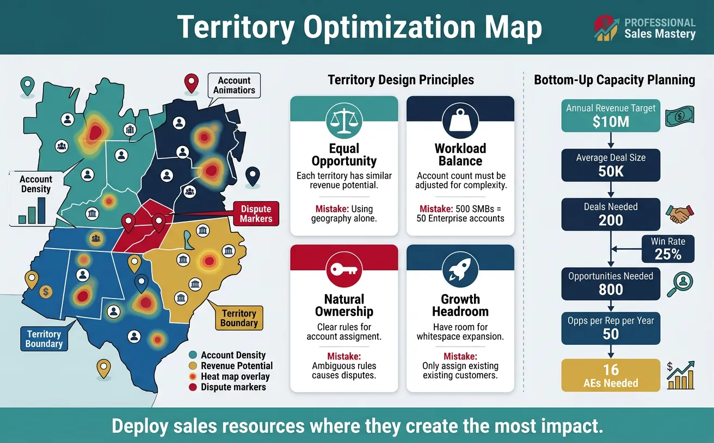

We use cookies to enhance your browsing experience, serve personalized content, and analyze our traffic.
By clicking "Accept All", you consent to our use of cookies. See our
Privacy Policy
for more information.
Data-driven sales isn't about drowning in dashboards—it's about identifying the few metrics that matter most, understanding what they reveal, and taking targeted action. Great sales teams measure what they want to improve, not everything they can measure.

Figure 1: Sales analytics dashboard — identifying the few metrics that matter most for data-driven selling
The Analytics Imperative
Companies using data-driven selling are 23% more likely to outperform on revenue growth (McKinsey). High-performing sales teams are 3.5x more likely to use analytics in their daily routines.
Key Metrics
Sales metrics fall into three categories: activity metrics (what reps do), pipeline metrics (deal progression), and outcome metrics (results). Focus on a balanced view across all three.

Figure 2: Sales metrics categories — activity, pipeline, and outcome metrics for balanced performance tracking
Essential Sales Metrics
Category
Metric
Formula
Benchmark
Activity
Calls per Day
Total outbound calls ÷ Working days
40-60 for SDRs
Emails Sent
Total outbound emails ÷ Working days
50-100 for SDRs
Meetings Set
Qualified meetings scheduled
15-25/month for SDRs
Pipeline
Win Rate
Won deals ÷ Total closed deals × 100
20-30% typical
Average Deal Size
Total revenue ÷ Deals closed
Varies by industry
Sales Cycle Length
Avg days from opp creation to close
30-90 days SMB, 6-12mo enterprise
Outcome
Revenue per Rep
Total revenue ÷ Number of quota-carrying reps
4-8x OTE
Quota Attainment
Actual revenue ÷ Quota × 100
60-70% of reps at 100%+
Customer Acquisition Cost
Sales + Marketing spend ÷ New customers
CAC:LTV ratio < 1:3
Sales Dashboards
Effective dashboards answer specific questions for specific audiences. Don't build one dashboard for everyone—build the right views for each role.
Dashboard by Role
Role
Key Questions
Primary Metrics
VP Sales
Will we hit the number? Where are we exposed?
Forecast accuracy, pipeline coverage, attainment vs. plan
Sales Manager
Who needs help? Where are deals stuck?
Rep performance, stage aging, at-risk deals
AE
What should I work on today? Am I on track?
Personal pipeline, upcoming tasks, quota pacing
SDR
Are my activities converting?
Activity metrics, meeting-to-opportunity rate
RevOps
Is the system healthy? What needs fixing?
Data quality, process compliance, forecast variance
Dashboard Design Principles
5-7 metrics max: More causes dashboard blindness
Comparison context: vs. target, vs. last period, vs. peers
Actionable alerts: Red/yellow/green with clear thresholds
Drill-down capability: Click to investigate root causes
Real-time updates: Stale data erodes trust
Pipeline Analytics
Pipeline analytics reveal where deals flow smoothly and where they get stuck. The goal is to diagnose pipeline health, identify bottlenecks, and predict outcomes with confidence.

Figure 3: Pipeline analytics funnel — diagnosing pipeline health and identifying deal flow bottlenecks
Pipeline Health Indicators
Indicator
Healthy
Warning Signs
Coverage Ratio
3-4x quota
<2x (insufficient), >6x (poor qualification)
Stage Distribution
Balanced funnel shape
Bulge at any stage (stuck deals)
Pipeline Age
Average close dates are current
Many deals pushed 2+ times
Creation Pace
Steady new-pipeline weekly
Gaps longer than 2 weeks
Deal Progression
Deals move stages regularly
>30% static for 14+ days
Conversion Analysis
Stage-by-stage conversion analysis reveals where your process is strong and where it breaks down.
Conversion Funnel Analysis
Sample Conversion Funnel
Stage
Count
Stage Conversion
Cumulative
MQL
1,000
—
100%
SAL (Sales Accepted)
600
60%
60%
Discovery Complete
300
50%
30%
Solution Presented
150
50%
15%
Proposal Sent
90
60%
9%
Closed Won
45
50%
4.5%
Insight: The MQL→SAL conversion (60%) and Discovery→Solution (50%) represent the biggest drop-offs—focus improvement efforts here.
Conversion Benchmarks by Segment
Conversion rates vary significantly by deal type. Segment your analysis for actionable insights.
By Deal Size: Large deals often have lower conversion but higher value—separate analysis
By Source: Inbound vs. outbound vs. partner—different baseline expectations
By Rep: Identify coaching opportunities from rep-level variance
By Industry: Some verticals convert better than others
Velocity Metrics
Sales velocity measures how quickly revenue flows through your pipeline. It's the single best indicator of sales engine efficiency.
Optimization requires systematic analysis of what's working and what's not. Win/loss analysis and A/B testing bring scientific rigor to sales improvement.

Figure 4: Performance optimization cycle — systematic win/loss analysis and A/B testing for continuous improvement
Win/Loss Analysis
Examine closed deals to understand why you win and why you lose. Patterns reveal systemic opportunities.
Analysis Area
Win Pattern Questions
Loss Pattern Questions
Competitor
Which competitors do we beat? Why?
Who beats us? On what dimensions?
Buying Process
Who was the champion? How did we engage?
Did we fail to reach decision-makers?
Value Proposition
Which value messages resonated?
Was ROI compelling enough?
Timing
Was timing urgent for them?
Did they have competing priorities?
Sales Execution
What did we do right?
Where did we drop the ball?
Win/Loss Interview Best Practice
Have someone other than the assigned rep conduct win/loss interviews. Buyers are more candid with neutral parties. 3rd-party services exist for this purpose.
A/B Testing
Sales A/B testing applies experimental rigor to optimize messaging, cadences, and processes.
Analyze: Statistical significance before declaring winner
Coaching Insights
Analytics reveal exactly where reps need coaching. Move from gut-feel management to evidence-based development.
Data-Driven Coaching Framework
Rep Performance Diagnosis
Metric Gap
Likely Issue
Coaching Focus
Low activity
Effort or time management
Workflow, prioritization, motivation
High activity, low meetings
Messaging or targeting
Outreach scripts, ICP alignment
Meetings booked, low pipeline
Discovery or qualification
Questioning skills, qualification rigor
Good pipeline, low close rate
Negotiation or objection handling
Closing techniques, objection scripts
Long cycle times
Process discipline
Next-step setting, urgency creation
Territory Optimization
Territory design and capacity planning ensure sales resources are deployed where they can have the most impact. Getting this wrong means either leaving money on the table or burning resources inefficiently.

Figure 5: Territory optimization — deploying sales resources where they create the most impact
Territory Design Principles
Principle
Description
Common Mistakes
Equal Opportunity
Each territory has similar revenue potential
Using geography alone (ignores account density)
Workload Balance
Account count adjusted for complexity
Giving 500 SMBs = 50 Enterprise accounts
Natural Ownership
Clear rules for account assignment
Ambiguous rules causing territory disputes
Growth Headroom
Room for whitespace expansion
Only assigning existing customers
Capacity Planning
Capacity planning determines how many reps you need to hit targets. It's a critical input to hiring, budgeting, and go-to-market strategy.
Capacity Model Components
Bottom-Up Capacity Calculation
Input
Example
Annual Revenue Target
$10,000,000
Average Deal Size
$50,000
Deals Needed
200 deals
Win Rate
25%
Opportunities Needed
800
Opps per Rep per Year
50
Reps Needed
16 AEs
Quota-to-OTE Ratios
Segment
Typical Quota:OTE
Reasoning
Enterprise
4-6x
Large deals, longer cycles, higher support costs
Mid-Market
5-7x
Balance of volume and deal complexity
SMB
6-10x
Higher volume, lower touch, faster cycles
Predictive Analytics
Predictive analytics uses historical data and machine learning to forecast outcomes, score leads, and recommend actions.
Predictive Use Cases in Sales
Use Case
What It Predicts
Business Impact
Lead Scoring
Likelihood to convert
Reps focus on highest-potential leads
Deal Scoring
Probability to close
More accurate forecasts
Churn Prediction
Risk of customer loss
Proactive retention
Propensity Models
Likelihood to buy product X
Targeted cross-sell/upsell
Next Best Action
Optimal rep activity
Guided selling
AI in Sales Analytics
Modern sales intelligence tools analyze email sentiment, call transcripts, and buyer engagement signals to surface insights humans miss. Look for tools that provide explainable predictions—knowing why a deal is at risk matters more than just knowing that it is.
Sales Analytics Canvas
Document your organization's key metrics, dashboards, and optimization priorities:
Sales Analytics Canvas
Map your analytics framework. Download as Word, Excel, PDF, or PowerPoint.
Draft auto-saved
All data stays in your browser. Nothing is sent to or stored on any server.
Exercises
Exercise 130 min
Build Your Dashboard
Design a sales dashboard for your role. Include 5-7 key metrics, define red/yellow/green thresholds, and sketch the visual layout. Consider: What questions does it answer? How often should it update?
Exercise 245 min
Win/Loss Analysis
Select 3 recent wins and 3 recent losses. For each, document: (1) key decision-makers involved, (2) competitive situation, (3) value proposition that resonated or didn't, (4) lessons learned. Look for patterns.
Exercise 320 min
Sales Velocity Calculation
Calculate your current Sales Velocity using the formula: (Opportunities × Win Rate × Avg Deal Size) ÷ Cycle Length. Then identify which of the 4 levers would have the biggest impact if improved by 10%. Build an action plan for that lever.
Key Takeaways
Measure what matters: Focus on 5-7 key metrics rather than tracking everything
Activity → Pipeline → Outcome: Build your metrics framework in this sequence
Dashboard by role: Different stakeholders need different views and levels of detail
Pipeline health indicators: Coverage ratio, stage distribution, deal age, and creation pace
Sales Velocity formula: (Opportunities × Win Rate × Deal Size) ÷ Cycle Length as the master metric
Win/loss analysis: Systematic learning from outcomes reveals patterns you'd otherwise miss
Data-driven coaching: Metrics reveal exactly where each rep needs development
Predictive analytics: AI and ML can score leads, forecast outcomes, and recommend next actions